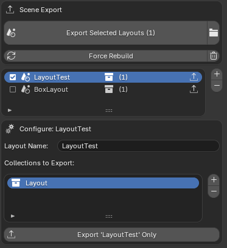
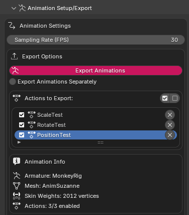
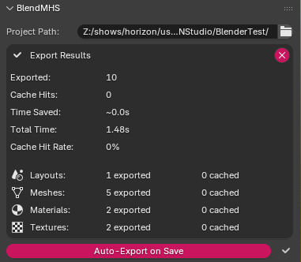
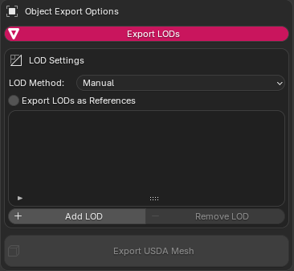
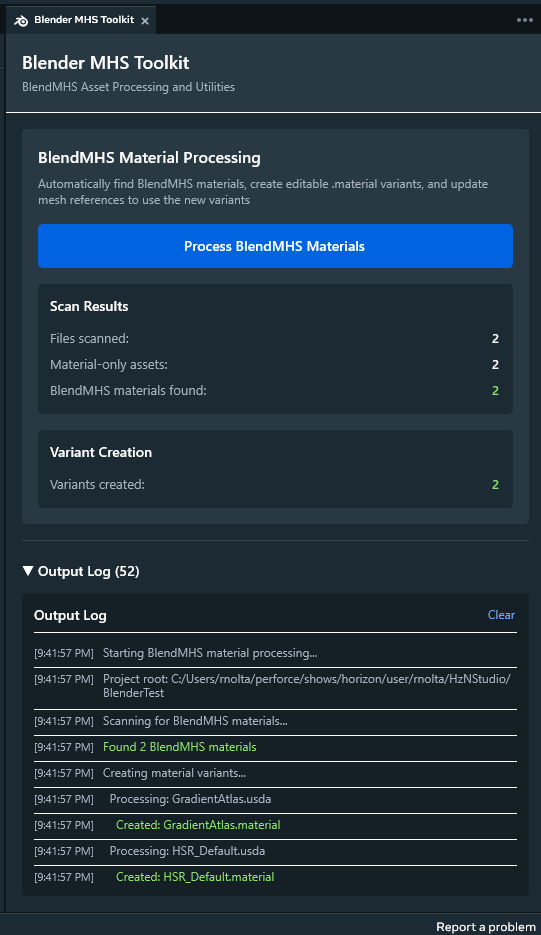
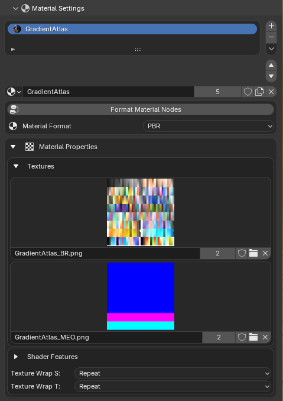
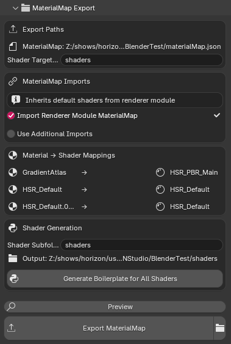
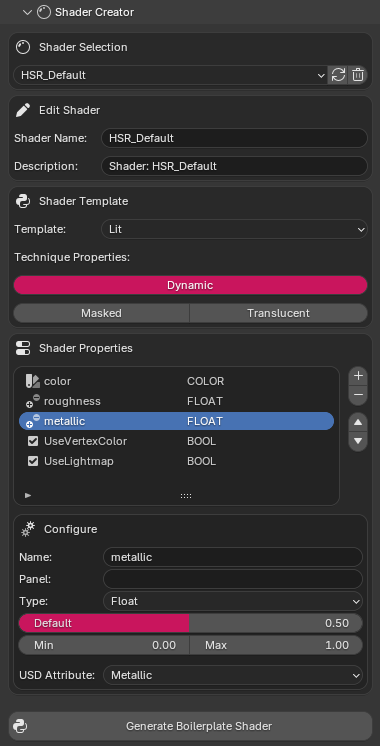

Blender to Meta Horizon Studio Pipeline
BlendMHS is a Blender addon designed to streamline the content creation workflow for Meta Horizon Studio (MHS). It provides a complete pipeline for exporting USD Scene Compositions, Static Meshes, Animated Meshes, and Materials to Meta Horizon Studio.
Purpose-built USD authoring specifically optimized for MHS — not Blender's built-in exporter
Auto-export on save combined with MHS hot-reloading for rapid iteration
Detects Blender linked instances and exports them once with USD references
Automatically extracts instances from geometry nodes modifiers
Full UsdSkel support with armatures, skin weights, and action export
Choose which animation actions to include with per-action enable/disable
Option to apply modifiers during export for baked geometry
Auto-detects and exports vertex color data as displayColor primvars
Automatic Z-up to Y-up conversion for MHS compatibility
Configure and export multiple scene compositions from one file
Manual or auto-generated LODs with configurable distance ratios
Blender materials designed for 1:1 mapping to MHS renderer_module shaders
BlendMHS leverages MHS's Hot-Reloading capabilities combined with an Auto-Export on Save feature. This allows artists to work entirely in Blender — simply save your file and your changes are automatically exported to USD and hot-reloaded in Meta Horizon Studio for instant preview.
Export complete scene layouts with full control over what gets included:

Scene Composition Export Panel
Export selected static mesh objects as individual USD files with comprehensive geometry data:
st)
with indexed storage
st1) for lightmapping
displayColor and displayOpacity primvars
Export skinned meshes with skeletal animation using the UsdSkel schema:
Actions are sampled at a configurable frame rate and exported with translation, rotation, and scale keyframes for each bone.

Animation Export Settings
{project_path}/
├── layouts/ # Scene composition files (.usda)
├── meshes/ # Individual mesh USD files
├── materials/ # Material definition files
├── textures/ # Texture assets (BC, MRO, N, E)
└── shaders/ # Generated .surface shader files (WIP)Intelligent caching system that dramatically speeds up iterative exports:

Export Cache Statistics Panel

LOD Settings Panel
When a project containing BlendMHS assets is opened, the Auto-Processor automatically detects BlendMHS metadata, creates MHS-compatible material variants, and updates mesh references — no manual intervention required. Simply export from Blender and open your project in MHS.
A custom Meta Horizon Studio editor panel that provides automatic material conversion for BlendMHS-exported USD assets:
materials/ folder, detects BlendMHS metadata, and
creates MHS-compatible material variants
BlendMHS embeds customLayerData metadata in exported
USD files, enabling MHS to recognize and specially handle these
compositions. This extensible architecture supports:

MHS Blender USD Toolkit Panel
Development of Blender material node groups at full parity with MHS renderer_module shaders, enabling direct 1:1 mapping from Blender scenes to Meta Horizon Studio:
This establishes a standardized material library in Blender that maps directly to MHS shaders — artists select a material type, configure textures, and export knowing the result will render identically in MHS.

Material Settings Panel
Automatically detects and exports materials during scene export:
materialMap.json
.surface) with overwrite
protection
materialMap.json without
overwriting existing entries

MaterialMap Auto-Export Settings
Artist-driven tool for creating and editing MHS shader node groups:
HSR_ node
groups
.surface boilerplate files for the MHS
engine

Shader Creator Panel